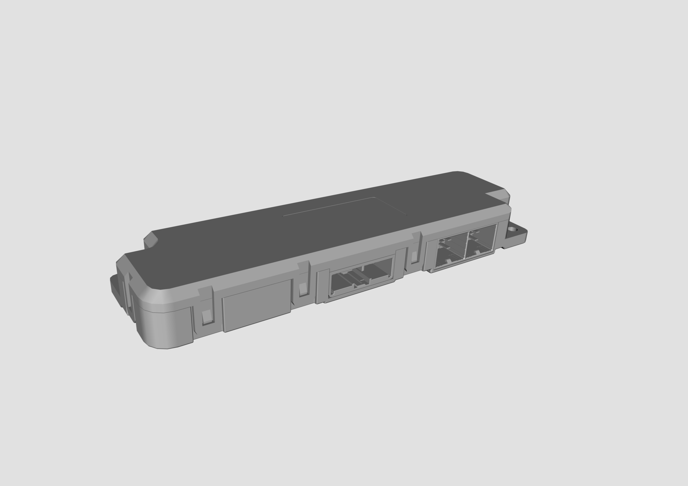
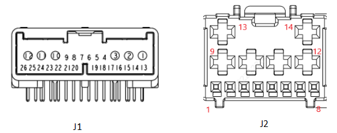

1. Описание функции: объединяет в себе ① функцию контроллера панорамного люка, ② функцию контроллера двери задка с электроприводом, ③ функцию радиочастотного приемника, ④ защиту от защемления по датчикам Холла, ⑤ функцию связи по CAN/LIN, ⑥ управление режимом пониженного энергопотребления, ⑦ управление сетью, ⑧ антенный усилитель на стекле.
2. Схематичное изображение внешнего вида контроллера:

3. Схематичное изображение разъемов контроллера:

4. Описание функций контактов:
| Контакт | Номинальный ток | Описание функции | Тип сигнала |
| Разъем J1 (JPN_CD_1376357-8_A2) | |||
| J1-1 | 1A | VBAT-2 (питание модуля, датчик Холла) | POWER |
| J1-2 | 1A | GND (питание модуля, датчик Холла) | GND |
| J1-3 | 1A | VBAT-1 (питание модуля, датчик Холла) | POWER |
| J1-4 | 0.01A | Сигнал открытия стекла люка с переднего плафона освещения салона | I-D-L |
| J1-5 | 0.01A | Сигнал переключателя двери задка со стороны водителя | I-D-L |
| J1-6 | 0.01A | Сигнал закрытия стекла люка с переднего плафона освещения салона | I-D-L |
| J1-7 | 0.01A | Сигнал переключателя полной блокировки | I-D-L |
| J1-8 | 0.01A | Переключатель сброса доводчика замка | I-D-L |
| J1-9 | 0.01A | Сигнал закрытия солнцезащитной шторки с переднего плафона освещения салона | I-D-L |
| J1-10 | 1A | GND (питание модуля, датчик Холла) | POWER |
| J1-11 | 10A | Открытие электромотора стекла люка | O-H-Bridge |
| J1-12 | 10A | Закрытие электромотора стекла люка | O-H-Bridge |
| J1-13 | 0.01A | Масса датчиков Холла (левая опорная штанга) | POWER |
| J1-14 | 0.005A | Сигнал 1 датчика Холла электромотора левой опорной штанги двери задка с электроприводом | I-PWM |
| J1-15 | 0.005A | Сигнал 2 датчика Холла электромотора левой опорной штанги двери задка с электроприводом | I-PWM |
| J1-16 | 0.005A | Сигнал 1 датчика Холла электромотора правой опорной штанги двери задка с электроприводом | I-PWM |
| J1-17 | 0.005A | Сигнал 2 датчика Холла электромотора правой опорной штанги двери задка с электроприводом | I-PWM |
| J1-18 | 0.01A | Масса датчиков Холла (правая опорная штанга) | GND |
| J1-19 | 0.01A | Внутренний переключатель двери задка | I-D-L |
| J1-20 | 0.01A | Сигнал открытия солнцезащитной шторки с переднего плафона освещения салона | I-D-L |
| J1-21 | 0.01A | Сигнал переключателя неполной блокировки | I-D-L |
| J1-22 | 0.01A | Сигнал подъема люка | I-D-L |
| J1-23 | 0.01A | CAN-H | BUS |
| J1-24 | 0.01A | CAN-L | BUS |
| J1-25 | 1A | Сигнальная масса (питание модуля, датчик Холла) | GND |
| J1-26 | 0.012A | RFR LIN | BUS |
| Разъем J2 (ENG_CD_C-2406357_A) | |||
| J2-A1 | / | / | / |
| J2-A2 | / | / | / |
| J2-A3 | / | / | / |
| J2-A4 | 0.01A | Питание датчика Холла электромотора солнцезащитной шторки | POWER |
| J2-A5 | 0.01A | Питание датчика Холла электромотора люка | POWER |
| J2-A6 | 0.01A | Питание датчика Холла электромотора правой опорной штанги двери задка с электроприводом | POWER |
| J2-A7 | 0.01A | Питание датчика Холла электромотора левой опорной штанги двери задка с электроприводом | POWER |
| J2-A8 | 0.185A | Управление зуммером (L) | O-LSD |
| J2-A9 | 8A | Закрытие электромотора правой опорной штанги двери задка с электроприводом | O-H-Bridge |
| J2-A10 | 8A | Открытие электромотора правой опорной штанги двери задка с электроприводом | O-H-Bridge |
| J2-A11 | 8A | Закрытие электромотора левой опорной штанги двери задка с электроприводом | O-H-Bridge |
| J2-A12 | 8A | Открытие электромотора левой опорной штанги двери задка с электроприводом | O-H-Bridge |
| J2-A13 | 8A | GND (масса левой опорной штанги) | GND |
| J2-A14 | 8A | VBAT_4 (питание левой опорной штанги) | I-PWM |
| J2-B1 | / | Сигнал датчика открывания багажника ногой | I-D-L |
| J2-B2 | Сигнал 2 датчика Холла электромотора люка | Сигнал 2 датчика Холла электромотора люка | I-PWM |
| J2-B3 | Сигнал 1 датчика Холла электромотора солнцезащитной шторки | Сигнал 1 датчика Холла электромотора солнцезащитной шторки | I-PWM |
| J2-B4 | Сигнал 1 датчика Холла электромотора люка | Сигнал 1 датчика Холла электромотора люка | I-PWM |
| J2-B5 | Сигнал 2 датчика Холла электромотора солнцезащитной шторки | Сигнал 2 датчика Холла электромотора солнцезащитной шторки | I-PWM |
| J2-B6 | Масса датчиков Холла (люк) | Масса датчиков Холла (люк) | GND |
| J2-B7 | Масса датчиков Холла (солнцезащитная шторка) | Масса датчиков Холла (солнцезащитная шторка) | GND |
| J2-B8 | / | / | / |
| J2-B9 | 10A | Закрытие электромотора солнцезащитной шторки | O-H-Bridge |
| J2-B10 | 10A | Открытие электромотора солнцезащитной шторки | O-H-Bridge |
| J2-B11 | 5A | Выход блокировки доводчика замка | O-H-Bridge |
| J2-B12 | 5A | Выход разблокировки доводчика замка | O-H-Bridge |
| J2-B13 | 15A | VBAT_3 (питание солнцезащитной шторки, доводчика замка) | POWER |
| J2-B14 | / | GND (питание солнцезащитной шторки, доводчика замка) | GND |